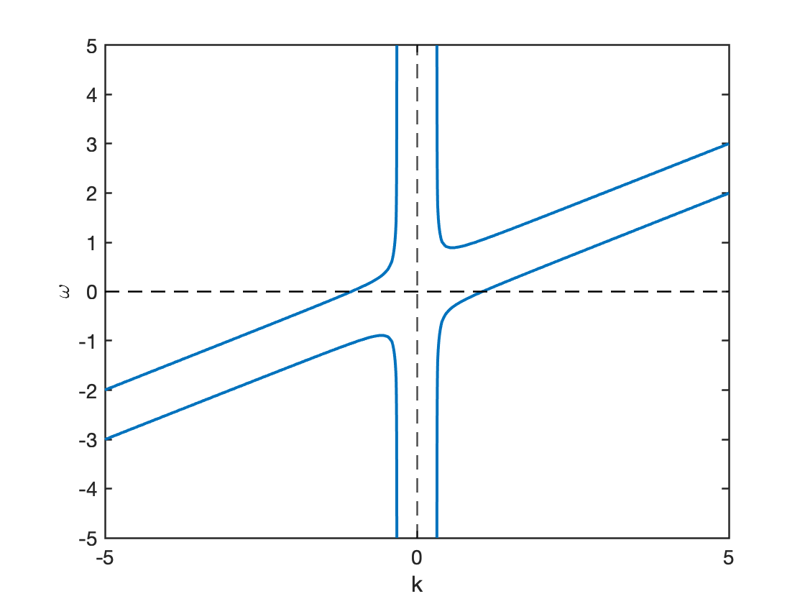
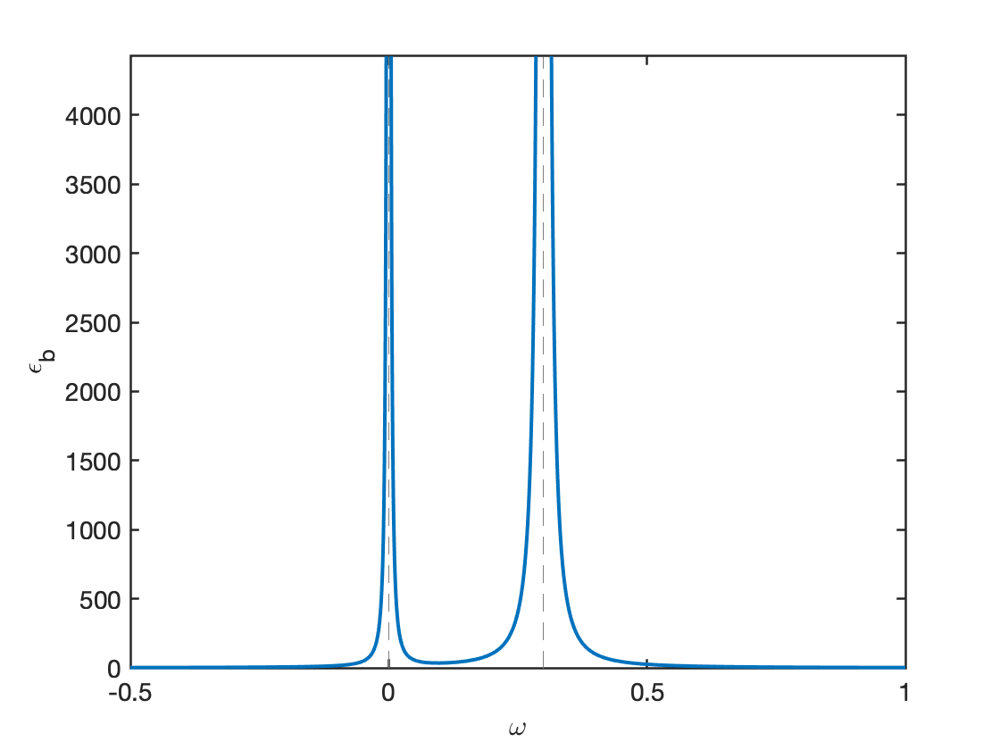
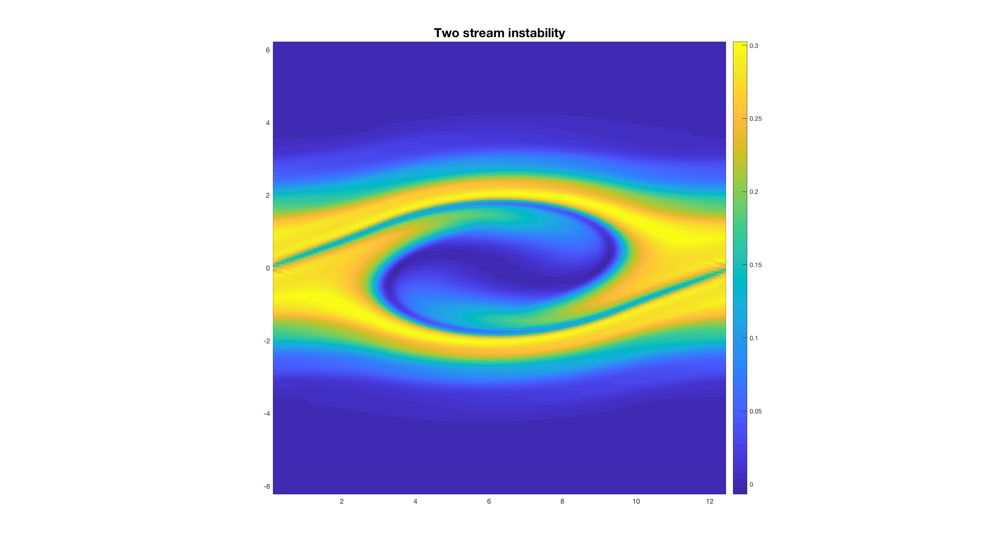

5 Plasmas as Fluid
In a plasma the situation is much more complicated than that single particle orbits; the \(\mathbf{E}\) and \(\mathbf{B}\) fields are not prescribed but are determined by the positions and motions of the charges themselves. One must solve a self-consistent problem; that is, find a set of particle trajectories and field patterns such that the particles will generate the fields as they move along their orbits and the fields will cause the particles to move in those exact orbits. And this must be done in a time-varying situation. It sounds very hard, but it is not.
We have seen that a typical plasma density might be \(10^{18}\) ion–electron pairs per \(\text{m}^3\). If each of these particles follows a complicated trajectory and it is necessary to follow each of these, predicting the plasma’s behavior would be a hopeless task. Fortunately, this is not usually necessary because, surprisingly, the majority-perhaps as much as 80%-of plasma phenomena observed in real experiments can be explained by a rather crude model. This model is that used in fluid mechanics, in which the identity of the individual particle is neglected, and only the motion of fluid elements is taken into account. Of course, in the case of plasmas, the fluid contains electrical charges. In an ordinary fluid, frequent collisions between particles keep the particles in a fluid element moving together. It is surprising that such a model works for plasmas, which generally have infrequent collisions. But we shall see that there is a reason for this.
A more refined treatment-the kinetic theory of plasmas-requires more mathematical calculation. An introduction to kinetic theory is given in Chapter 8.
In some plasma problems, neither fluid theory nor kinetic theory is sufficient to describe the plasma’s behavior. Then one has to fall back on the tedious process of following the individual trajectories. Brute-force computer simulation can play an important role in filling the gap between theory and experiment in those instances where even kinetic theory cannot come close to explaining what is observed.
5.1 Definitions
| Variable | Description |
|---|---|
| \(m_s\) | mass |
| \(q_s\) | charge |
| \(n_s\) | number density |
| \(\rho_s\) | mass density |
| \(\sigma_s, \rho^\ast\) | charge density (\(=n_s q_s\)) |
| \(T_s\) | temperature |
| \(p_s\) | scalar pressure |
| \(\mathbf{u}_s\) | flow velocity |
| \(\mathbf{j}_s\) | current density (\(=\rho_s^\ast \mathbf{u}_s\)) |
| \(e_s\) | internal energy |
| \(\phi_s\) | potential energy |
| \(\epsilon_s\) | total energy (\(=e_s+\frac{\mathbf{u_s}^2}{2}+\phi_s\)) |
where \(s\) denotes the species (e.g. \(\text{H}^+, \text{O}^+\)). Do not confuse \(\sigma\) here with conductivity. Then the total quantities without subscripts can be written as
\[ \begin{aligned} &n=\sum_s{n_s} \\ &\rho=\sum_{s}\rho_s=\sum_{s}{m_s n_s} \\ &p=\sum_s{p_s} \\ &T=\sum_s{\frac{n_s}{n}T_s} \\ &\mathbf{u}=\frac{1}{\rho}\sum_s \rho_s \mathbf{u}_s \\ &\mathbf{v}_s=\mathbf{u}_s -\mathbf{u},\quad \text{relative velocity of the } s^{th} \text{ species} \\ &\sigma = \sum_s{\sigma_s}=\sum_s{q_s n_s} \\ &\mathbf{j}=\sum_s{\mathbf{j}_s}=\sum_s{\sigma_s \mathbf{u}_s}=\sum_s{\sigma_s}\mathbf{v}_s+\mathbf{u}\sum_s{\sigma_s}=\sum_s{\sigma_s \mathbf{v}_s}+\sigma\mathbf{u}=\mathbf{j}_{cd}+ \mathbf{j}_{cv} \\ &\quad \text{where } \mathbf{j}_{cd}=\sum_s{\sigma_s}\mathbf{v}_s \text{ is the conduction current density} \\ &\quad \quad \quad \quad\mathbf{j}_{cv}=\sigma \mathbf{u} \text{ is the convection current density} \\ &\epsilon=\frac{1}{\rho}\sum_s{\rho_s\epsilon_s}=e+\frac{u^2}{2}+\phi \text{ (internal + kinetic + potential)} \end{aligned} \]
It can be easily verified that
\[ \sum_s{\rho_s\mathbf{v}_s}=0 \]
In this note we tried to use \(\mathbf{v}\) for all species/particle-based velocities, and \(\mathbf{u}\) for all bulk velocities.
We have 5 independent unknown quantities for each species: \(n_j, \mathbf{u}_j, p_j\). The pressure can be replaced by temperature \(T_j\). Additionally, we have the 6 EM field quantities: \(\mathbf{B}, \mathbf{E}\). For a 2-fluid despcription with ions and electrons, altogether we have \(5*2+6=16\) unknowns, so we need 16 equations to determine the system.
5.2 Relation of Plasma Physics to Ordinary Electromagnetics
5.2.1 Maxwell’s Equations
In vacuum:
\[ \begin{aligned} \epsilon_0 \nabla\cdot\mathbf{E} &= \sigma \\ \nabla\times\mathbf{E} &= -\dot{\mathbf{B}} \\ \nabla\cdot\mathbf{B} &= 0 \\ \nabla\times\mathbf{B} &= \mu_0 (\mathbf{j}+\epsilon_0\dot{\mathbf{E}}) \end{aligned} \tag{5.1}\]
In a medium:
\[ \begin{aligned} \nabla\cdot\mathbf{D} &= \sigma \\ \nabla\times\mathbf{E} &= -\dot{\mathbf{B}} \\ \nabla\cdot\mathbf{B} &= 0 \\ \nabla\times\mathbf{H} &= \mathbf{j}+\dot{\mathbf{D}} \\ \mathbf{D} &= \epsilon\mathbf{E} \\ \mathbf{B} &= \mu\mathbf{H} \end{aligned} \tag{5.2}\]
\(\sigma\) and \(\mathbf{j}\) stand for the “free” charge and current densities. The “bound” charge and current densities arising from polarization and magnetization of the medium are included in the definition of the quantities \(\mathbf{D}\) and \(\mathbf{H}\) in terms of \(\epsilon\) and \(\mu\). In a plasma, the ions and electrons comprising the plasma are the equivalent of the “bound” charges and currents. Since these charges move in a complicated way, it is impractical to try to lump their effects into two constants \(\epsilon\) and \(\mu\). Consequently, in plasma physics, one generally works with the vacuum equations, in which \(\sigma\) and \(\mathbf{j}\) include all the charges and currents, both external and internal.
Note that we have used \(\mathbf{E}\) and \(\mathbf{B}\) in the vacuum equations rather than their counterparts \(\mathbf{D}\) and \(\mathbf{H}\), which are related by the constants \(\epsilon_0\) and \(\mu_0\). This is because the forces \(q\mathbf{E}\) and \(\mathbf{j}\times\mathbf{B}\) depend on \(\mathbf{E}\) and \(\mathbf{B}\) rather than \(\mathbf{D}\) and \(\mathbf{H}\), and it is not necessary to introduce the latter quantities as long as one is dealing with the vacuum equations.
5.2.2 Classical Treatment of Magnetic Materials
Since each gyrating particle has a magnetic moment, it would seem that the logical thing to do would be to consider a plasma as a magnetic material with a permeability \(\mu_m\). ((We have put a subscript \(m\) on the permeability to distinguish it from the adiabatic invariant \(\mu\).) To see why this is not done in practice, let us review the way magnetic materials are usually treated.
The ferromagnetic domains, say, of a piece of iron have magnetic moments \(\mu_i\), giving rise to a bulk magnetization
\[ \mathbf{M} = \frac{1}{V}\sum_i\mu_i \]
per unit volume. This has the same effect as a bound current density equal to
\[ \mathbf{j}_b = \nabla\times\mathbf{M} \]
In the vacuum Ampère’s law, we must include in \(\mathbf{j}\) both this current and the “free”, or externally applied, current \(\mathbf{j}_f\):
\[ \mu_0^{-1}\nabla\times\mathbf{B} = \mathbf{j}_f + \mathbf{j}_b + \epsilon_0 \dot{\mathbf{E}} \]
We wish to write this equation in the simple form
\[ \nabla\times\mathbf{H} = \mathbf{j}_f + \epsilon_0\dot{\mathbf{E}} \]
by including \(\mathbf{j}_b\) in the definition of \(\mathbf{H}\). This can be done if we let
\[ \mathbf{H} = \mu_0^{-1}\mathbf{B} - \mathbf{M} \]
To get a simple relation between \(\mathbf{B}\) and \(\mathbf{H}\), we assume \(\mathbf{M}\) to be proportional to \(\mathbf{B}\) or \(\mathbf{H}\):
\[ \mathbf{M} = \chi_m \mathbf{H} \]
The constant \(\chi_m\) is the magnetic susceptibility. We now have
\[ \mathbf{B} = \mu_0(1+\chi_m)\mathbf{H} \equiv \mu_m \mathbf{H} \]
This simple relation between \(\mathbf{B}\) and \(\mathbf{H}\) is possible because of the linear relation between \(\mathbf{M}\) and \(\mathbf{H}\).
In a plasma with a magnetic field, each particle has a magnetic moment \(\mu_\alpha\), and the quantity \(\mathbf{M}\) is the sum of all these \(\mu_\alpha\)’s in 1 \(\text{m}^3\). But now we have
\[ \mu_\alpha = \frac{mv_{\perp\alpha}^2}{2B}\propto \frac{1}{B}\quad \mathbf{M}\propto \frac{1}{B} \]
The relation between \(\mathbf{M}\) and \(\mathbf{H}\) (or \(\mathbf{B}\)) is no longer linear, and we cannot write \(\mathbf{B} = \mu_m\mathbf{H}\) with \(\mu_m\) constant. It is therefore not useful to consider a plasma as a magnetic medium.
5.2.3 Classical Treatment of Dielectrics
The polarization \(\mathbf{P}\) per unit volume is the sum over all the individual moments \(\mathbf{p}_i\) of the electric dipoles. This gives rise to a bound charge density
\[ \sigma_b = -\nabla\cdot\mathbf{P} \tag{5.3}\]
In the vacuum equation, we must include both the bound charge and the free charge:
\[ \epsilon_0\nabla\cdot\mathbf{E} = \sigma_f + \sigma_b \]
We wish to write this in the simple form
\[ \nabla\cdot\mathbf{D} = \sigma_f \]
by including \(\sigma_b\) in the definition of \(\mathbf{D}\). This can be done by letting
\[ \mathbf{D} = \epsilon_0\mathbf{E} + \mathbf{P} \equiv \epsilon \mathbf{E} \]
If \(\mathbf{P}\) is linearly proportional to \(\mathbf{E}\),
\[ \mathbf{P} = \epsilon_0 \chi_e\mathbf{E} \]
then \(\epsilon\) is a constant given by
\[ \epsilon = (1+\chi_e)\epsilon_0 \]
There is no a priori reason why a relation like the above cannot be valid in a plasma, so we may proceed to try to get an expression for \(\epsilon\) in a plasma.
5.2.4 The Dielectric Constant of a Plasma
We have seen in Section 4.4 that a fluctuating \(\mathbf{E}\) field gives rise to a polarization current \(\mathbf{j}_p\). This leads, in turn, to a polarization charge given by the equation of continuity:
\[ \frac{\partial \sigma_p}{\partial t} + \nabla\cdot\mathbf{j}_p = 0 \]
This is the equivalent of Equation 5.3, except that, as we noted before, a polarization effect does not arise in a plasma unless the electric field is time varying. Since we have an explicit expression for \(\mathbf{j}_p\) but not for \(\sigma_p\), it is easier to work with the Ampère’s law:
\[ \nabla\times\mathbf{B} = \mu_0(\mathbf{j}_f +\mathbf{j}_p + \epsilon\dot{\mathbf{E}}) \]
We wish to write this in the form
\[ \nabla\times\mathbf{B} = \mu_0(\mathbf{j}_f + \epsilon\dot{\mathbf{E}}) \]
This can be done if we let
\[ \epsilon = \epsilon_0 + \frac{j_p}{\dot{E}} \]
From Equation 4.4 for \(\mathbf{j}_p\), we have
\[ \epsilon = \epsilon_0 + \frac{\rho}{B^2}\quad \text{or}\quad \epsilon_R\equiv \frac{\epsilon}{\epsilon_0} = 1+\frac{\mu_0\rho c^2}{B^2} \tag{5.4}\]
This is the low-frequency plasma dielectric constant for transverse motions. The qualifications are necessary because our expression for \(\mathbf{j}_p\) is valid only for \(\omega^2\ll\omega_c^2\) and for \(\mathbf{E}\) perpendicular to \(\mathbf{B}\). The general expression for \(\epsilon\), of course, is very complicated and hardly fits on one page.
Note that as \(\rho\rightarrow 0\), \(\epsilon_R\) approaches its vacuum value, unity, as it should. As \(B\rightarrow\infty\), \(\epsilon_R\) also approaches unity. This is because the polarization drift \(\mathbf{v}_p\) then vanishes, and the particles do not move in response to the transverse electric field. In a usual laboratory plasma, the second term in Equation 5.4 is large compared with unity. For instance, if \(n=10^{16}\,\text{m}^{-3}\) and \(B=0.1\,\text{T}\) we have (for hydrogen)
\[ \frac{\mu_0\rho c^2}{B^2} = \frac{(4\pi\times 10^{-7})(10^{16})(1.67\times 10^{-27})(3\times 10^8)^2}{(0.1)^2} = 189 \]
This means that the electric fields due to the particles in the plasma greatly alter the fields applied externally. A plasma with large \(\epsilon\) shields out alternating fields, just as a plasma with small \(\lambda_D\) shields out dc fields.
5.3 The Single-Fluid MHD Equations
In (Chen 2016), this is introduced in the diffusion chapter 5.7, which is a bit weird. In (Bellan 2008), this is introduced in chapter 2 where Vlasov equation is first derived and then follows the simplifications which lead to 2-fluid and MHD.
There are three basic assumptions in MHD:
\[ \begin{aligned} \epsilon\omega/4\pi\sigma& \ll 1, \\ (v/c)^2&\ll 1,\\ \lambda/ L& \ll 1, \end{aligned} \]
where \(\omega\) is the plasma frequency, \(v\) is the plasma bulk speed, \(\lambda\) is the average free distance, and \(L\) is the system characteristic length.
Standard orderings of ideal MHD can also be written as
\[ \epsilon \sim \omega/\Omega_c \sim k\rho \]
where the plasma varies on frequency scales \(\omega\) small compared to the gyrofrequency \(\Omega_c\), and varies on spatial scales \(1/k\) long compared to the gyroradius \(\rho\). (Here, \(\epsilon\) means a “small” value.) Thus it covers phenomenon related to compressional and shear Alfvén waves and instabilities, ion acoustic waves, and ion and electron kinetic effects such as Landau damping. However, it does not include drift-waves or other micro-instabilities because they result from finite Larmor radius (FLR) effects which vanish in the usual MHD ordering.
Single fluid MHD is somehow inconsistent since there is only one velocity. The definition of current using velocity cannot be applied, and the current can only be given by Ampère’s law (without the displacement current), \(\mathbf{J}=\nabla\times\mathbf{B}/\mu_0\).
5.3.1 Equation of Continuity
The integral form of mass conservation for each species is
\[ \frac{\mathrm{d}}{\mathrm{d}t}\int_V \rho_s dx^3=0 \]
The conservation of matter requires that the total number of particles \(N_s\) in a volume V can change only if there is a net flux of particles across the surface S bounding that volume. Since the particle flux density is \(n_s\mathbf{u}_s\), we have, by the divergence theorem,
\[ \frac{\partial N_s}{\partial t} = \int_V\frac{\partial n_s}{\partial t}dV = -\oint n\mathbf{u}_s\cdot \mathrm{d}\mathbf{S} = - \int_V \nabla\cdot(n_s\mathbf{u}_s)dV \]
Since this must hold for any volume V, the integrands must be equal:
\[ \frac{\partial n_s}{\partial t} + \nabla\cdot(n_s\mathbf{u}_s) = 0 \]
There is one such equation of continuity for each species. Any sources or sinks of particles are to be added to the right-hand side.
5.3.2 Momentum Equation
Maxwell’s equations tell us what \(\mathbf{E}\) and \(\mathbf{B}\) are for a given state of the plasma. To solve the self-consistent problem, we must also have an equation giving the plasma’s response to given \(\mathbf{E}\) and \(\mathbf{B}\). In the fluid approximation, we consider the plasma to be composed of two or more interpenetrating fluids, one for each species. In the simplest case, when there is only one species of ion, we shall need two equations of motion, one for the positively charged ion fluid and one for the negatively charged electron fluid. In a partially ionized gas, we shall also need an equation for the fluid of neutral atoms. The neutral fluid will interact with the ions and electrons only through collisions. The ion and electron fluids will interact with each other even in the absence of collisions, because of the \(\mathbf{E}\) and \(\mathbf{B}\) fields they generate.
The equation of motion for a single particle is
\[ m\frac{\mathrm{d}\mathbf{v}}{\mathrm{d}t} = q(\mathbf{E}+\mathbf{v}\times\mathbf{B}) \tag{5.5}\]
Assume first that there are no collisions and no thermal motions. Then all the particles in a fluid element move together, and the average velocity \(\mathbf{u}\) of the particles in the element is the same as the individual particle velocity \(\mathbf{v}\). The fluid equation is obtained simply by multiplying Equation 5.5 by the density \(n\):
\[ mn\frac{\mathrm{d}\mathbf{u}}{\mathrm{d}t} = qn(\mathbf{E}+\mathbf{u}\times\mathbf{B}) \tag{5.6}\]
This is, however, not a convenient form to use. In Equation 5.5, the time derivative is to be taken at the position of the particles. On the other hand, we wish to have an equation for fluid elements fixed in space, because it would be impractical to do otherwise. Consider a drop of cream in a cup of coffee as a fluid element. As the coffee is stirred, the drop distorts into a filament and finally disperses all over the cup, losing its identity. A fluid element at a fixed spot in the cup, however, retains its identity although particles continually go in and out of it.
To make the transformation to variables in a fixed frame, consider \(\mathbf{G}(x,t)\) to be any property of a fluid in one-dimensional x space. The change of \(\mathbf{G}\) with time in a frame moving with the fluid is the sum of two terms:
\[ \frac{\mathrm{d}\mathbf{G}(x,t)}{\mathrm{d}t} = \frac{\partial \mathbf{G}}{\partial t} + \frac{\partial \mathbf{G}}{\partial x}\frac{\partial x}{\partial t} = \frac{\partial \mathbf{G}}{\partial t} + u_x\frac{\partial \mathbf{G}}{\partial x} \]
The first term on the right represents the change of \(\mathbf{G}\) at a fixed point in space, and the second term represents the change of G as the observer moves with the fluid into a region in which \(\mathbf{G}\) is different. In three dimensions, this generalizes to
\[ \frac{\mathrm{d}\mathbf{G}}{\mathrm{d}t} = \frac{\partial \mathbf{G}}{\partial t} + (\mathbf{u}\cdot\nabla)\mathbf{G} \]
This is called the convective derivative and is sometimes written \(\frac{D\mathbf{G}}{Dt}\). Note that \((\mathbf{u}\cdot\nabla)\) is a scalar differential operator.
In the case of a plasma, we take \(\mathbf{G}\) to be the fluid velocity \(\mathbf{u}\) and write Equation 5.6 as
\[ mn\Big[\frac{\partial\mathbf{u}}{\partial t} + (\mathbf{u}\cdot\nabla)\mathbf{u}\Big] = qn(\mathbf{E}+\mathbf{u}\times\mathbf{B}) \]
where \(\partial\mathbf{u}/\partial t\) is the time derivative in a fixed frame.
Stress Tensor –> scalar pressure
\[ mn\Big[\frac{\partial\mathbf{u}}{\partial t} + (\mathbf{u}\cdot\nabla)\mathbf{u}\Big] = qn(\mathbf{E}+\mathbf{u}\times\mathbf{B}) - \nabla p \tag{5.7}\]
What we have shown here is only a special case: the transfer of x momentum by motion in the x direction; and we have assumed that the fluid is isotropic, so that the same result holds in the y and z directions. But it is also possible to transfer y momentum by motion in the x direction, for instance. This shear stress cannot be represented by a scalar \(p\) but must be given by a tensor \(\mathbf{P}\), the stress tensor, whose components \(P_{ij}= mn\overline{v_i v_j}\) specify both the direction of motion and the component of momentum involved. In the general case the term \(\nabla p\) is replaced by \(-\nabla\cdot\mathbf{P}\).
When the distribution function is an isotropic Maxwellian, \(\mathbf{P}\) is written
\[ \mathbf{P} = \begin{pmatrix}p & 0 & 0 \\ 0 & p & 0 \\ 0 & 0 & p\end{pmatrix} \]
\(-\nabla\cdot\mathbf{P} = \nabla p\). A plasma could have two temperatures \(T_\perp\) and \(T_\parallel\) in the presence of a magnetic field. In that case, there would be two pressures \(T_\perp\) and \(T_\parallel\) in the presence of a magnetic field. In that case, there would be two pressure \(p_\perp = nk_B T_\perp\) and \(p_\parallel = nk_B T_\parallel\). The stress tensor is then
\[ \mathbf{P} = \begin{pmatrix}p_\perp & 0 & 0 \\ 0 & p_\perp & 0 \\ 0 & 0 & p_\parallel\end{pmatrix} \]
where the coordinate of the third row or column is the direction of \(\mathbf{B}\). This is still diagonal and shows isotropy in a plane perpendicular to \(\mathbf{B}\).
In an ordinary fluid, the off-diagonal elements of \(\mathbf{P}\) are usually associated with viscosity. When particles make collisions, they come off with an average velocity in the direction of the fluid velocity \(\mathbf{u}\) at the point where they made their last collision. This momentum is transferred to another fluid element upon the next collision. This tends to equalize \(\mathbf{u}\) at different points, and the resulting resistance to shear flow is what we intuitively think of as viscosity. The longer the mean free path, the farther momentum is carried, and the larger is the viscosity. In a plasma there is a similar effect which occurs even in the absence of collisions. The Larmor gyration of particles (particularly ions) brings them into different parts of the plasma and tends to equalize the fluid velocities there. The Larmor radius rather than the mean free path sets the scale of this kind of collisionless viscosity. It is a finite-Larmor-radius effect which occurs in addition to collisional viscosity and is closely related to the \(\mathbf{v}_E\) drift in a nonuniform \(\mathbf{E}\) field (Equation 4.3).
Collisions
If there is a neutral gas, the charged fluid will exchange momentum with it through collisions. The momentum lost per collision will be proportional to the relative velocity \(\mathbf{u}-\mathbf{u}_0\), where \(\mathbf{u}_0\) is the velocity of the neutral fluid. If \(\tau\), the mean free time between collisions, is approximately constant, the resulting force term can be roughly written as \(-mn(\mathbf{u}-\mathbf{u}_0)/\tau\). The equation of motion can be generalized to include anisotropic pressure and neutral collisions as follows:
\[ mn\Big[\frac{\partial\mathbf{u}}{\partial t} + (\mathbf{u}\cdot\nabla)\mathbf{u}\Big] = qn(\mathbf{E}+\mathbf{u}\times\mathbf{B}) - \nabla\cdot\overleftrightarrow{P} - \frac{mn(\mathbf{u}-\mathbf{u}_0)}{\tau} \tag{5.8}\]
This can also be written as (including the pressure term and other forces)
\[ \rho\frac{\mathrm{d}\mathbf{u}}{\mathrm{d}t}=(\rho^\ast \mathbf{E}+\mathbf{j}\times\mathbf{B})-\nabla\cdot\overleftrightarrow{P}+\mathbf{f}_n \]
or, in an equivalent conservative form,
\[ \frac{\partial (\rho\mathbf{u})}{\partial t}+\nabla\cdot(\rho\mathbf{u}\mathbf{u})=(\rho^\ast \mathbf{E}+\mathbf{j}\times\mathbf{B})-\nabla\cdot\overleftrightarrow{P}+\mathbf{f}_n \]
Collisions between charged particles have not been included; these will be discussed in sec-collision ADD IT!.
Comparison with Ordinary Hydrodynamics
Ordinary fluids obey the Navier–Stokes equation
This is the same as Equation 5.8 except for the absence of electromagnetic forces and collisions between species (there being only one species). The viscosity term \(\rho\nu\nabla^2\mathbf{u}\), where \(\nu\) is the kinematic viscosity coefficient, is just the collisional part of \(\nabla\cdot\overleftrightarrow{P} - \nabla p\) in the absence of magnetic fields. Equation 5.9 describes a fluid in which there are frequent collisions between particles. Equation 5.8, on the other hand, was derived without any explicit statement of the collision rate. Since the two equations are identical except for the \(\mathbf{E}\) and \(\mathbf{B}\) terms, can Equation 5.8 really describe a plasma species? The answer is a guarded yes, and the reasons for this will tell us the limitations of the fluid theory. This is extremely important to clarify — there are still quite many people think that collision is assumed for the fluid theory, therefore do not believe that MHD can be used to describe plasmas.
In the derivation of Equation 5.8, we did actually assume implicitly that there were many collisions. This assumption came in the derivation of the pressure tensor (TO BE ADDED!) when we took the velocity distribution to be Maxwellian. Such a distribution generally comes about as the result of frequent collisions. However, this assumption was used only to take the average of \(v^2\). Any other distribution with the same average would give us the same answer. The fluid theory, therefore, is not very sensitive to deviations from the Maxwellian distribution, but there are instances in which these deviations are important. Kinetic theory must then be used.
There is also an empirical observation by Irving Langmuir which helps the fluid theory. In working with the electrostatic probes which bear his name, Langmuir discovered that the electron distribution function was far more nearly Maxwellian than could be accounted for by the collision rate. This phenomenon, called Langmuir’s paradox, has been attributed at times to high-frequency oscillations. There has been no satisfactory resolution of the paradox, but this seems to be one of the few instances in plasma physics where nature works in our favor.
Another reason the fluid model works for plasmas is that the magnetic field, when there is one, can play the role of collisions in a certain sense. When a particle is accelerated, say by an \(\mathbf{E}\) field, it would continuously increase in velocity if it were allowed to free-stream. When there are frequent collisions, the particle comes to a limiting velocity proportional to \(\mathbf{E}\). The electrons in a copper wire, for instance, drift together with a velocity \(\mathbf{v}=\mu\mathbf{E}\), where \(\mu\) is the mobility. A magnetic field also limits free-streaming by forcing particles to gyrate in Larmor orbits. The electrons in a plasma also drift together with a velocity proportional to \(\mathbf{E}\), namely, \(\mathbf{v}_E=\mathbf{E}\times\mathbf{B}/B^2\). In this sense, a collisionless plasma behaves like a collisional fluid. Of course, particles do free-stream along the magnetic field, and the fluid picture is not particularly suitable for motions in that direction. For motions perpendicular to \(\mathbf{B}\), the fluid theory is a good approximation.
5.3.3 Equation of State
One more relation is needed to close the system of equations. A complete description requires the equation of energy. However, the simplest way is to use the thermodynamic equation of state relating \(p\) to \(n\):
\[ p = C\rho^\gamma \]
where \(C\) is a constant and \(\gamma\) is the ratio of specific heats \(C_p/C_\nu\). The term \(\nabla p\) is therefore given by
\[ \frac{\nabla p}{p} = \gamma \frac{\nabla n}{n} \tag{5.10}\]
For isothermal compression, we have
\[ \nabla p = \nabla(nk_B T) = k_B T\nabla n \]
so that, clearly, \(\gamma=1\). For adiabatic compression, \(k_B T\) will also change, giving \(\gamma\) a value larger than one. If \(N\) is the number of degrees of freedom, \(\gamma\) is given by
\[ \gamma = (2+N)/N \]
The validity of the equation of state requires that heat flow be negligible; that is, that thermal conductivity be low. Again, this is more likely to be true in directions perpendicular to \(\mathbf{B}\) than parallel to it. Fortunately, most basic phenomena can be described adequately by the crude assumption of the equation of state.
5.3.4 The Complete Set of Fluid Equations
For simplicity, let the plasma have only two species: ions and electrons; extension to more species is trivial. The charge and current densities are then given by
\[ \begin{aligned} \sigma &= n_i q_i + n_e q_e \\ \mathbf{j} &= n_i q_i \mathbf{v}_i + n_e q_e \mathbf{v}_e \end{aligned} \]
We shall neglect collisions and viscosity. The above discussions form the following equation set:
\[ \begin{aligned} \epsilon_0\nabla\cdot\mathbf{E} = n_i q_i + n_e q_e \\ \nabla\times\mathbf{E} = -\dot{\mathbf{B}} \\ \nabla\cdot\mathbf{B} = 0 \\ \mu_0^{-1}\nabla\times\mathbf{B} = n_i q_i \mathbf{u}_i + n_e q_e \mathbf{u}_e + \epsilon_0\dot{\mathbf{E}} \\ m_jn_j\Big[ \frac{\partial\mathbf{u}_j}{\partial t}+(\mathbf{u}_j\cdot\nabla)\mathbf{u}_j\Big] = q_j n_j (\mathbf{E}+\mathbf{u}_j\times\mathbf{B}) - \nabla p_j\quad j=i,e \\ \frac{\partial n_j}{\partial t} + \nabla\cdot(n_j\mathbf{u}_j) = 0\quad j=i,e \\ p_j = C_j n_j^\gamma\quad j=i,e \end{aligned} \tag{5.11}\]
There are 16 scalar unknowns: \(n_i, n_e, p_i, p_e, \mathbf{u}_i, \mathbf{u}_e, \mathbf{E}\), and \(\mathbf{B}\). There are apparently 18 scalar equations if we count each vector equation as three scalar equations. However, two of Maxwell’s equations are superfluous, since the two of the equations can be recovered from the divergences of the other two. The simultaneous solution of this set of 16 equations in 16 unknowns gives a self-consistent set of fields and motions in the fluid approximation.
5.3.5 Ideal MHD
Ideal MHD only contains one fluid. In the most common sense, ideal MHD involves equations of compressible, adiabatic and inviscid fluid:
\[ \begin{aligned} \frac{\partial \rho}{\partial t} + \nabla\cdot(\rho\mathbf{u}) = 0 \\ \frac{\partial \rho\mathbf{u}}{\partial t} + \nabla\cdot\left( \rho\mathbf{u}\mathbf{u} - \mathbf{B}\mathbf{B} + p^\ast \right) = 0 \\ \frac{\partial \mathcal{E}}{\partial t} + \nabla\cdot\left[ (\mathcal{E} + p^\ast)\mathbf{u} - \mathbf{B}(\mathbf{B}\cdot\mathbf{u}) \right] = 0 \\ \frac{\partial \mathbf{B}}{\partial t} - \nabla\times(\mathbf{u}\times\mathbf{B}) = 0 \\ p^\ast = p + \frac{\mathbf{B}\cdot\mathbf{B}}{2} \\ \mathcal{E} = \frac{p}{\gamma - 1} + \frac{\rho \mathbf{u}\cdot\mathbf{u}}{2} + \frac{\mathbf{B}\cdot\mathbf{B}}{2} \end{aligned} \tag{5.12}\]
where \(\rho\) is the mass density, \(\mathbf{u}\) the velocity, \(\mathcal{E}\) the total energy density, \(\mathbf{B}\) the magnetic field, \(p\) the thermal pressure, and \(\gamma\) the adiabatic index (ratio of specific heats). These equations are written using units in which the magnetic permeability \(\mu_0 = 1\):
\[ \mathbf{B} = \frac{\mathbf{B}_\mathrm{SI}}{\sqrt{\mu_0}} \]
This is nice since the coefficient is completely absorbed into the magnetic field in the unit system. With a reference density \(\rho_0\) and velocity \(u_0=v_A\), the velocity normalization is simply given as
\[ u_0 = \frac{B_{0,SI}}{\sqrt{\mu_0\rho_0}} = \frac{B_0}{\sqrt{\rho_0}} \]
Note that microscopic dissipations of any kind (viscosity, resistivity, or conduction) are not included in the default configuration.
5.4 Generalized Ohm’s Law
DERIVATIONS TO BE ADDED…
The generalized Ohm’s law can be derived from two-fluid equations:
\[ \mathbf{E} = -\mathbf{u}\times\mathbf{B} + \eta\mathbf{j} + \frac{1}{en}\mathbf{j}\times\mathbf{B}-\frac{1}{en}\nabla\cdot\overleftrightarrow{P}_e +\frac{m_e}{ne^2}\Big[ \frac{\partial \mathbf{j}}{\partial t}+\nabla\cdot(\mathbf{j}\mathbf{u}+\mathbf{u}\mathbf{j}) \Big] \tag{5.13}\]
where the first term on the right-hand side is the convection term, the second term is the resistivity term (conductive term), the third term is called the Hall term, the fourth term is the electron pressure term, and the fifth term is called the electron inertia term, since it is proportional to the mass of electrons.
Note that both \(\mathbf{u}\) and \(\mathbf{j}\) are the first-order moments, with \(\mathbf{u}\) being the (weighted) sum of the first-order moment of electrons and ions while \(\mathbf{j}\) being the difference between them. The generalized Ohm’s law is actually the difference between the electrons’ and ions’ first-order moment equations. The generalized Ohm’s law is an equation that governs the time evolution of \(\mathbf{j}\). Also note that Ampère’s law, with the displacement current retained, is an equation governing the time evolution of \(\mathbf{E}\). However, in the approximation of the resistive MHD, the time derivative terms \(\partial \mathbf{E}/\partial t\) and \(\partial \mathbf{j} /\partial t\) are ignored in Ampère’s law and Ohm’s law, respectively. In this approximation, Ohm’s law is directly solved to determine \(\mathbf{E}\) and Ampère’s law is directly solved to determine \(\mathbf{j}\). [Introduction to plasma physics: with space and laboratory applications, D. A. Gurnett and A. Bhattacharjee.]
\[ \underbrace{\mathbf{E}}_{a} + \underbrace{\mathbf{u}\times\mathbf{B}}_{b} - \underbrace{\frac{1}{\sigma}\mathbf{j}}_{c} - \underbrace{\frac{\mathbf{j}\times\mathbf{B}}{en_e}}_{d} + \underbrace{\frac{1}{n_e e}\nabla(n_e k_B T_e)}_{e} = 0 \]
Denote each term above with a to e. From the single-fluid MHD momentum equation, let \(\omega\) be the oscillation frequency of the perturbed velocity, and variable in scalar form be the characteristic magnitude of that quantity,
\[ \begin{aligned} \rho\big( \frac{\partial \mathbf{u}}{\partial t}+\mathbf{u}\cdot\nabla\mathbf{u}\big) = \mathbf{j}\times\mathbf{B} - \nabla p +\rho\mathbf{g} \\ \Rightarrow \omega\rho U\sim J B \end{aligned} \tag{5.14}\]
Using and the assumptions of MHD, the relations between each term in generalized Ohm’s law are
\[ \begin{aligned} \frac{b}{d} &= \frac{UB}{JB/en_e} = \frac{en_eUB}{\omega \rho U} = \frac{en_e B}{\omega n_e m_i} = \frac{\Omega_i}{\omega} \gg 1 \\ \frac{c}{d} &= \frac{J/\sigma}{JB/en_e} = \frac{en_e}{B\sigma} = \frac{en_e}{Be^2 n_e/\nu_{ei} m_e} = \frac{\nu_{ei}}{\Omega_e} \ll 1 \\ \frac{b}{d} &= \frac{U}{J/en_e} \ll 1,\ \text{if } \mathbf{J} \text{ is carried by } \mathbf{u}_e \end{aligned} \]
which generates direct contradiction with the MHD assumption that \(\mathbf{u}\ll \mathbf{u}_e\) if currents are mostly carried by electrons. (WHAT ABOUT THE PRESSURE TERM SCALING? The gradient implies that it is related to the system size; the pressure implies that it is also related to thermal motion?)
There is an interesting point about the electron pressure term. If we assume an isotropic plasma with \(n_i=n_e\) and an adiabatic process \(P/n^\gamma=C\) where \(C\) is a constant and \(\gamma\) is the adiabatic index, we have
\[ \begin{aligned} \mathbf{E}_{\nabla P_e} &= \frac{\nabla P_e}{n} = \frac{\nabla P_i}{n} = \frac{\nabla(Cn^\gamma)}{n} \\ &= C\gamma n^{\gamma-2}\nabla n = C\frac{\gamma}{\gamma-1}\nabla n^{\gamma-1} \end{aligned} \tag{5.15}\]
Equation 5.15 indicates that the associated electric field is a potential field that only relates to density.
5.5 Fluid Drifts Perpendicular to B
Since a fluid element is composed of many individual particles, one would expect the fluid to have drifts perpendicular to \(\mathbf{B}\) if the individual guiding centers have such drifts. However, since the \(\nabla p\) term appears only in the fluid equations, there is a drift associated with it which the fluid elements have but the particles do not have. For each species, we have an equation of motion
\[ mn\Big[ \underbrace{\frac{\partial\mathbf{u}}{\partial t}}_{1}+\underbrace{(\mathbf{u}\cdot\nabla)\mathbf{u}}_{2}\Big] = q n (\mathbf{E}+\underbrace{\mathbf{u}\times\mathbf{B}}_{3}) - \nabla p \tag{5.16}\]
Consider the ratio of term 1 to term 3:
\[ \frac{\text{term }1}{\text{term }3} \approx \bigg\lvert\frac{mni\omega v_\perp}{qnv_\perp B}\bigg\rvert \approx \frac{\omega}{\omega_c} \]
Here we have taken \(\partial/\partial t=i\omega\) and are concerned only with \(\mathbf{v}_\perp\). For drifts slow compared with the time scale associated with \(\omega_c\), we may neglect term 1. We shall also neglect the \((\mathbf{u}\cdot\nabla)\mathbf{u}\) term and show a posteriori that this is all right. Let \(\mathbf{E}\) and \(\mathbf{B}\) be uniform, but let \(n\) and \(p\) have a gradient. This is the usual situation in a magnetically confined plasma column (Fig. 3.4 ADD FIGURE!). Taking the cross product of Equation 5.16 with B, we have (neglecting the left-hand side)
\[ \begin{aligned} 0 &= qn[\mathbf{E}\times\mathbf{B}+(\mathbf{u}_\perp\times\mathbf{B})\times\mathbf{B}] - \nabla p\times\mathbf{B} \\ &= qn[\mathbf{E}\times\mathbf{B}+\mathbf{B}(\cancel{\mathbf{u}_\perp\cdot\mathbf{B}})-\mathbf{u}_\perp\mathbf{B}^2] - \nabla p\times\mathbf{B} \\ &= qn[\mathbf{E}\times\mathbf{B}-\mathbf{u}_\perp\mathbf{B}^2] - \nabla p\times\mathbf{B} \end{aligned} \]
Therefore,
\[ \mathbf{u}_\perp = \frac{\mathbf{E}\times\mathbf{B}}{B^2} -\frac{\nabla p \times\mathbf{B}}{qnB^2} \equiv \mathbf{u}_E + \mathbf{u}_D \]
where
\[ \mathbf{u}_E\equiv\frac{\mathbf{E}\times\mathbf{B}}{B^2}\quad\mathbf{E}\times\mathbf{B}\,\text{drift} \]
\[ \mathbf{u}_D\equiv-\frac{\nabla p\times\mathbf{B}}{qnB^2}\quad\text{Diamagnetic drift} \tag{5.17}\]
The drift \(\mathbf{u}_E\) is the same as for guiding centers, but there is now a new drift \(\mathbf{u}_D\), called the diamagnetic drift. Since \(\mathbf{u}_D\) is perpendicular to the direction of the gradient, our neglect of \((\mathbf{u}\cdot\nabla)\mathbf{u}\) is justified if \(\mathbf{E}=0\). If \(\mathbf{E}=-\nabla\phi\neq 0\) (i.e. a potential field), \((\mathbf{u}\cdot\nabla)\mathbf{u}\) is still zero if \(\nabla\phi\) and \(\nabla p\) are in the same direction; otherwise, there could be a more complicated solution involving \((\mathbf{u}\cdot\nabla)\mathbf{u}\).
With the help of Equation 5.10, we can write the diamagnetic drift as
\[ \mathbf{u}_D = \pm \frac{\gamma k_B T}{eB}\frac{\hat{z}\times\nabla n}{n} \tag{5.18}\]
In particular, for an isothermal plasma in the geometry of Fig.3.4 (ADD IT!), in which \(\nabla n = \partial n\partial r\hat{r} = n^\prime\hat{r}\) (\(n^\prime < 0\)), we have the following formulas familiar to experimentalists who have worked with Q-machines
\[ \begin{aligned} \mathbf{u}_{Di} &= \frac{k_B T_i}{eB}\frac{n^\prime}{n}\hat{\theta} \\ \mathbf{u}_{De} &= -\frac{k_B T_e}{eB}\frac{n^\prime}{n}\hat{\theta} \end{aligned} \]
The physical reason for this drift can be seen from Figure 5.1. Here we have drawn the orbits of ions gyrating in a magnetic field. There is a density gradient toward the left, as indicated by the density of orbits. Through any fixed volume element there are more ions moving downward than upward, since the downward-moving ions come from a region of higher density. There is, therefore, a fluid drift perpendicular to \(\nabla n\) and \(\mathbf{B}\), even though the guiding centers are stationary. The diamagnetic drift reverses sign with \(q\) because the direction of gyration reverses. The magnitude of \(\mathbf{u}_D\) does not depend on mass because the \(m^{-1/2}\) dependence of the velocity is cancelled by the \(m^{1/2}\) dependence of the Larmor radius—less of the density gradient is sampled during a gyration if the mass is small.

Since ions and electrons drift in opposite directions, there is a diamagnetic current. For \(\gamma=Z=1\), this is given by
\[ \mathbf{j}_D = ne(\mathbf{u}_{Di} - \mathbf{u}_{De}) = (k_B T_i + k_B T_e)\frac{\mathbf{B}\times\nabla n}{B^2} \tag{5.19}\]
In the particle picture, one would not expect to measure a current if the guiding centers do not drift. In the fluid picture, the current \(\mathbf{j}_D\) flows wherever there is a pressure gradient. These two viewpoints can be reconciled if one considers that all experiments must be carried out in a finite-sized plasma. Suppose the plasma were in a rigid box (Fig. 3.6 ADD IT!). If one were to calculate the current from the single-particle picture, one would have to take into account the particles at the edges which have cycloidal paths. Since there are more particles on the left than on the right, there is a net current downward, in agreement with the fluid picture.
The reader may not be satisfied with this explanation because it was necessary to specify reflecting walls. If the walls were absorbing or if they were removed, one would find that electric fields would develop because more of one species—the one with larger Larmor radius—would collected than the other. Then the guiding centers would drift, and the simplicity of the model would be lost. Alternatively, one could imagine trying to measure the diamagnetic current with a current probe (Fig. 3.7 ADD IT!). This is just a transformer with a core of magnetic material. The primary winding is the plasma current threading the core, and the secondary is a multiturn winding all around the core. Let the whole thing be infinitesimally thin, so it does not intercept any particles. It is clear from Fig. 3.7 that a net upward current would be measured, there being higher density on the left than on the right, so that the diamagnetic current is a real current. From this example, one can see that it can be quite tricky to work with the single-particle picture. The fluid theory usually gives the right results when applied straightforwardly, even though it contains “fictitious” drifts like the diamagnetic drift.
What about the grad-B and curvature drifts which appeared in the single-particle picture? The curvature drift also exists in the fluid picture, since the centrifugal force is felt by all the particles in a fluid element as they move around a bend in the magnetic field. A term \(\bar{F}_{cf} = \overline{nmv_\parallel^2}/R_c = nk_B T_\parallel / R_c\) has to be added to the right-hand side of the fluid equation of motion. This is equivalent to a gravitational force \(mng\), with \(g = k_BT_\parallel/m R_c\), and leads to a drift \(\mathbf{u}_g=(m/q)(\mathbf{g}\times\mathbf{B})/B^2\), as in the particle picture (Equation 4.2).
The grad-B drift, however, does not exist for fluids. It can be shown on thermodynamic grounds that a magnetic field does not affect a Maxwellian distribution. This is because the Lorentz force is perpendicular to \(\mathbf{v}\) and cannot change the energy of any particle. The most probable distribution \(f(\mathbf{v})\) in the absence of \(\mathbf{B}\) is also the most probable distribution in the presence of \(\mathbf{B}\). If \(f(\mathbf{v})\) remains Maxwellian in a nonuniform \(\mathbf{B}\) field, and there is no density gradient, then the net momentum carried into any fixed fluid element is zero. There is no fluid drift even though the individual guiding centers have drifts; the particle drift in any fixed fluid element cancel out. To see this pictorially, consider the orbits of two particles moving through a fluid element in a nonuniform \(\mathbf{B}\) field (Figure 5.2). Since there is no \(\mathbf{E}\) field, the Larmor radius changes only because of the gradient in B; there is no acceleration, and the particle energy remains constant during the motion. If the two particles have the same energy, they will have the same velocity and Larmor radius while inside the fluid element. There is thus a perfect cancellation between particle pairs when their velocities are added to give the fluid velocity.
When there is a nonuniform \(\mathbf{E}\) field, it is not easy to reconcile the fluid and particle pictures. Then the finite-Larmor-radius effect of Section 4.3 causes both a guiding center drift and a fluid drift, but these are not the same; in fact, they have opposite signs! The particle drift was calculated in Chapter 4, and the fluid drift can be calculated from the off-diagonal elements of \(\mathbf{P}\). It is extremely difficult to explain how the finite-Larmor-radius effects differ. A simple picture like Fig. 3.6 will not work because one has to take into account subtle points like the following: in the absence of a density gradient, the density of guiding centers is not the same as the density of particles! (???)
(I need to think carefully about these pictures.)
5.6 Fluid Drifts Parallel to B
The \(z\) component of the fluid equation of motions is
\[ mn\left[ \frac{\partial u_z}{\partial t} + (\mathbf{u}\cdot\nabla)u_z\right] = qn E_z - \frac{\partial\phi}{\partial z} \tag{5.20}\]
The convective term can often be neglected because it is much smaller than the \(\partial u_z/\partial t\) term. We shall avoid complicated arguments here and simply consider cases in which \(u_z\) is spatially uniform. Using Equation 5.20, we have
\[ \frac{\partial u_z}{\partial t} = \frac{q}{m}E_z - \frac{\gamma k_B T}{mn}\frac{\partial n}{\partial z} \tag{5.21}\]
This shows that the fluid is accelerated along \(\mathbf{B}\) under the combined electrostatic and pressure gradient forces. A particularly important result is obtained by applying Equation 5.21 to massless electrons. Taking the limit \(m\rightarrow 0\) and specifying \(q=-e\) and \(\mathbf{E}=-\nabla\phi\), we have
\[ qE_z = e\frac{\partial\phi}{\partial z} = \frac{\gamma k_B T_e}{n}\frac{\partial n}{\partial z} \]
Electrons are so mobile that their heat conductivity is almost infinite. We may then assume isothermal electrons and take \(\gamma = 1\). Integrating, we have
\[ e\phi = k_B T_e \ln n + C \]
or
\[ n = n_0 \exp(e\phi/k_B T_e) \tag{5.22}\]
This is just the Boltzmann relation for electrons.
What this means physically is that electrons, being light, are very mobile and would be accelerated to high energies very quickly if there were a net force on them. Since electrons cannot leave a region en masse without leaving behind a large ion charge, the electrostatic and pressure gradient forces on the electrons must be closely in balance. This condition leads to the Boltzmann relation. Note that Equation 5.22 applies to each magnetic field lines separately. Different field lines may be charged to different potentials arbitrarily unless a mechanism is provided for the electrons to move across \(\mathbf{B}\). The conductors on which field lines terminate can provide such a mechanism, and the experimentalist has to take these end effects into account carefully.
Figure 5.3 shows graphically what occurs when there is a local density clump in the plasma. Let the density gradient be toward the center of the diagram, and suppose \(k_B T\) is constant. There is then a pressure gradient toward the center. Since the plasma is quasineutral, the gradient exists for both the electron and ion fluids. Consider the pressure gradient force \(\mathbf{F}_p\) on the electron fluid. It drives the mobile electrons away from the center, leaving the ions behind. The resulting positive charge generates a field \(\mathbf{E}\) whose force \(\mathbf{F}_E\) on the electrons opposes \(\mathbf{F}_p\). Only when \(\mathbf{F}_E = -\mathbf{F}_p\) is a steady state achieved. If \(\mathbf{B}\) is a constant, \(\mathbf{E}\) is an electrostatic field \(\mathbf{E}=-\nabla\phi\), and \(\phi\) must be large at the center, where \(n\) is large. This is just what Equation 5.22 tells us. The deviation from stric neutrality adjusts itself so that there is just enough charge to set up the \(\mathbf{E}\) field required to balance the forces on the electrons.
5.7 The Plasma Approximation
The previous example reveals an important characteristic of plasmas that has wide application. We are used to solving for \(\mathbf{E}\) from Poisson’s equation when we are given the charge density \(\sigma\). In a plasma, the opposite procedure is generally used. \(\mathbf{E}\) is found from the equations of motion, and Poisson’s equation is used only to find \(\sigma\). The reason is that a plasma has an overriding tendency to remain neutral. If the ions move, the electrons will follow. \(\mathbf{E}\) must adjust itself so that the orbits of the electrons and ions preserve neutrality. The charge density is of secondary importance; it will adjust itself so that Poisson’s equation is satisfied. This is true, of course, only for low-frequency motions in which the electron inertia is not a factor.
In a plasma, it is usually possible to assume \(n_i=n_e\) and \(\nabla\cdot\mathbf{E}\neq 0\) at the same time. We shall call this the plasma approximation. It is a fundamental trait of plasmas, one which is difficult for the novice to understand. Do not use Poisson’s equation to obtain \(\mathbf{E}\) unless it is unavoidable! In the set of fluid equations Equation 5.11, we may now eliminate Poisson’s equation and also eliminate one of the unknowns by setting \(n_i = n_e = n\).
The plasma approximation is almost the same as the condition of quasineutrality discussed earlier but has a more exact meaning. Whereas quasineutrality refers to a general tendency for a plasma to be neutral in its state of rest, the plasma approximation is a mathematical shortcut that one can use even for wave motions. As long as these motions are slow enough that both ions and electrons have time to move, it is a good approximation to replace Poisson’s equation by the equation \(n_i=n_e\). Of course, if only one species can move and the other cannot follow, such as in high-frequency electron waves, then the plasma approximation is not valid, and \(\mathbf{E}\) must be found from Maxwell’s Equation 5.1 rather than from the ion and electron equations of motion. Ampère’s law with the displacement current retained gives the time evolution of \(\mathbf{E}\):
\[ \frac{\mathrm{d}\mathbf{E}}{\mathrm{d}t} = \frac{1}{\epsilon_0}\left( \frac{\nabla\times\mathbf{B}}{\mu_0} - \mathbf{j} \right) \]
We shall return to the question of the validity of the plasma approximation when we come to the theory of ion waves. At that time, it will become clear why we had to use Poisson’s equation in the derivation of Debye shielding. For electron waves, we can also show that with a simple “modified” electron test particle model that updates the electric field while keeping the magnetic field constant, we can retain the plasma oscillation and electron Berstein wave.
5.8 Two-Fluid Model
Besides the Vlasov theory, we can apply the simpler but equally powerful 2-fluid model, in which electrons and ions are treated as two different fluids. Depending on the form of the pressure term, we have the 5/6/10-moment equations.
5.8.1 Six-moment
For monatomic gases, the six-moment equations for all charged fluids (indexed by \(s\)) can be written as:
\[ \begin{aligned} \frac{\partial \rho_s}{\partial t} + \nabla\cdot(\rho_s\mathbf{u}_s) = 0 \\ \frac{\partial (\rho_s\mathbf{u}_s)}{\partial t} + \nabla\cdot\left[ \rho_s\mathbf{u}_s\mathbf{u}_s + p_{s\perp}\pmb{I} + (p_{s\parallel} - p_{s\perp})\hat{b}\hat{b} \right] = \frac{q_s}{m_s}\rho_s(\mathbf{E} + \mathbf{u}_s\times\mathbf{B}) \\ \frac{\partial p_{s\parallel}}{\partial t} + \nabla\cdot(p_{s\parallel}\mathbf{u}_s) = -2p_{s\parallel}\hat{b}\cdot(\hat{b}\cdot\nabla)\mathbf{u}_s \\ \frac{\partial p_{s\perp}}{\partial t} + \nabla\cdot(p_{s\perp}\mathbf{u}_s) = -p_{s\perp}(\nabla\cdot\mathbf{u}_s) + p_{s\perp}\hat{b}\cdot(\hat{b}\cdot\nabla)\mathbf{u}_s \end{aligned} \tag{5.23}\]
The two pressure equations in Equation 5.23 can be combined to give the equation for the average pressure \(p=(2p_\perp + p_\parallel)/3\):
\[ \frac{\partial p_s}{\partial t} + \nabla\cdot(p_s\mathbf{u}_s) = (p_s - p_{s\parallel})\hat{b}\cdot(\hat{b}\cdot\nabla)\mathbf{u}_s - \left( p_s - \frac{p_{s\parallel}}{3} \right)\nabla\cdot\mathbf{u}_s \tag{5.24}\]
Alternatively, we can solve for the hydrodynamic energy density \(e = \frac{n\mathbf{u}^2}{2} + \frac{3}{2}p\) for each species:
\[ \frac{\partial e_s}{\partial t} + \nabla\cdot\left[ \mathbf{u}_s(e_s+p_s) + \mathbf{u}_s\cdot(p_{s\parallel} - p_{s\perp})\hat{b}\hat{b} \right] = \frac{q_s}{m_s}\rho_s \mathbf{u}_s\cdot\mathbf{E} \]
which is more of a conservative form and can be beneficial to get better jump conditions across shock waves. Note, however, that the parallel pressure equation is still solved with the adiabatic assumption, so non-adiabatic heating is not properly captured. In addition, the magnetic energy is not included into the energy density, so the jump conditions are only approximate (I think this is more of a numerical consideration). In general, there can be many more source terms on the right hand sides of the above equations corresponding to gravity, charge exchange, chemical reactions, collisions, etc.
The electric field \(\mathbf{E}\) and magnetic field \(\mathbf{B}\) are obtained from Maxwell’s equations:
\[ \begin{aligned} \frac{\partial \mathbf{B}}{\partial t} + \nabla\times\mathbf{E} &= 0 \\ \frac{\partial \mathbf{E}}{\partial t} - c^2\nabla\times\mathbf{B} &= -c^2\mu_0\mathbf{j} \\ \nabla\cdot\mathbf{E} &= \frac{\rho_c}{\epsilon_0} \\ \nabla\cdot\mathbf{B} &= 0 \end{aligned} \]
where \(\rho_c = \sum_s (q_s/m_s)\rho_s\) is the total charge density and \(\mathbf{j}=\sum_s(q_s/m_s)\rho_s\mathbf{u}_s\) is the current density.
The last two equations are constraints on the initial conditions; these are not guaranteed to hold numerically. Classical tricks involves using hyperbolic/parabolic cleaning or a facially-collocated Yee-type mesh.
5.8.2 Five/Ten-moment
\[ \begin{aligned} \frac{\partial(m_s n_s)}{\partial t} + \frac{\partial(m_sn_su_{j,s})}{\partial x_j} = 0 \\ \frac{\partial(m_s n_s u_{j,s})}{\partial t} + \frac{\partial \mathcal{P}_{ij,s}}{\partial x_j} = n_s q_s (E_i + \epsilon_{ijk}u_{j,s}B_k) \end{aligned} \]
where \(\epsilon_{ijk}\) is the Levi-Civita symbol. The moments are defined as
\[ \begin{aligned} n_s(\mathbf{x}) &\equiv \int f_s \mathrm{d}\mathbf{v} \\ u_{i,s}(\mathbf{x}) &\equiv \frac{1}{n_s(\mathbf{x})}\int v_i f_s \mathrm{d}\mathbf{v} \\ \mathcal{P}_{ij,s}(\mathbf{x}) &\equiv m_s \int v_i v_j f_s \mathrm{d}\mathbf{v} \end{aligned} \]
with \(f_s(\mathbf{x},\mathbf{v},t)\) being the phase space distribution function. We will neglect the subscript \(s\) hereinafter for convenience. For completeness, \(\mathcal{P}_{ij}\) relates to the more familiar thermal pressure tensor
\[ P_{ij} \equiv m\int(v_i - u_i)(v_i - u_i)f\mathrm{d}\mathbf{v} \]
by
\[ \mathcal{P}_{ij} = P_{ij} + nm u_i u_j \]
For simplicity, non-ideal effects like viscous dissipation are neglected. The electric and magnetic fields \(\mathbf{E}\) and \(\mathbf{B}\) are evolved using Maxwell equations
\[ \begin{aligned} \frac{\partial\mathbf{B}}{\partial t} + \nabla\times\mathbf{E} = 0 \\ \frac{\partial\mathbf{E}}{\partial t} - c^2\nabla\times\mathbf{B} = -\frac{1}{\epsilon_0}\sum_s q_s n_s \mathbf{u}_s \end{aligned} \]
with \(c=1/\sqrt(\mu_0\epsilon_0)\) being the speed of light.
To close the system, the second order moment \(\mathcal{P}_{ij}\) or \(P_{ij}\) must be specified. For example, a cold fluid closure simply sets \(P_{ij}=0\), while an isothermal equation of state (EOS) assumes that the temperature is constant. Or, assuming zero heat flux and that the pressure tensor is isotropic, we can write an adiabatic EOS for \(P_{ij} = p I_{ij}\),
\[ \frac{\partial\mathcal{\epsilon}}{\partial t} + \nabla\cdot\left[ (p+\mathcal{\epsilon})\mathbf{u} \right] = nq\mathbf{u}\cdot\mathbf{E} \]
where
\[ \mathcal{\epsilon} \equiv \frac{p}{\gamma-1} + \frac{1}{2}mn\mathbf{u}^2 \]
is the total fluid (thermal + kinetic) energy and \(\gamma\) is the adiabatic index, setting to \(5/3\) for a fully ionized plasma. For a plasma with \(S\) species (\(s=1,...,S\)) this system is closed and has a total of \(5S+6\) equations, and are here referred to as the five-moment model. More general models can be obtained by retaining the evolution equations for all six components of the pressure tensor in the so-called ten-moment model
\[ \frac{\mathcal{P}_{ij,s}}{\partial t} + \frac{\partial \mathcal{Q}_{ijm,s}}{\partial x_m} = n_sq_su_{i,s}E_j + \frac{q_s}{m_s}\epsilon_{iml}\mathcal{P}_{mj,s}B_l \tag{5.25}\]
where the third moment
\[ \mathcal{Q}_{ijm,s}(\mathbf{x}) \equiv m_s\int v_i v_j v_m f_s\mathrm{d}\mathbf{v} \]
relates to the heat flux tensor defined in the fluid frame
\[ Q_{ijm} \equiv m\int (v_i-u_i)(v_j-u_j)(v_m-u_m)\mathrm{d}\mathbf{v} \]
by
\[ \mathcal{Q}_{ijm} = Q_{ijm} + u_i\mathcal{P}_{jm} - 2nm u_i u_j u_m \]
Again, the equations here must be closed by some approximation for the heat-flux tensor. Another option is to include evolution equations for even higher order moments, e.g., the ten independent components of the heat-flux tensor.
Theoretically, the multifluid-Maxwell equations approach the Hall magnetohydrodynamics (MHD) under asymptotic limits of vanishing electron mass (\(m_e \rightarrow 0\)) and infinite speed of light (\(c\rightarrow\infty\)). All waves and effects within the two-fluid picture are retained, for example, the light wave, electron and ion inertial effects like the ion cyclotron wave and whistler wave. Particularly, through properly devised heat-flux closures, the ten-moment model could partially capture nonlocal kinetic effects like Landau damping, in a manner similar to the gyrofluid (?) models.
Although multifluid-Maxwell models provide a more complete description of the plasma than reduced, asymptotic models like MHD, they are less frequently used. The reason for this is the fast kinetic scales involved. Retaining the electron inertia adds plasma-frequency and cyclotron time-scale, while non-neutrality adds Debye length spatial-scales. Further, inclusion of the displacement currents means that EM waves must be resolved when using an explicit scheme. Fortunately, the restrictions due to kinetic scales are introduced only through the non-hyperbolic source terms of the momentum equation, the Ampère’s law, and the pressure equation. Therefore we may eliminate these restrictions by updating the source term separately either exactly or using an implicit algorithm (Note: BATSRUS applies the point-implicit scheme.). This allows larger time steps and leads to significant speedup, especially with realistic electron/ion mass ratios. The speed of light constraint still exists, however, can be greatly relaxed, using reduced values for the speed of light and/or sub-cycling Maxwell equations. Of course, an implicit Maxwell solver, or a reduced set of electromagnetic equations like the Darwin approximation (???), can also relax the time-step restrictions.
5.8.3 Characteristic wave speeds
The fastest wave speed in the 5/6/10-moment equations is the speed of light \(c\). Theoretically, the characteristic wave speeds shall be consistent and fallback to MHD in the isotropic 5-moment case.
Numerically, however, using \(c\) in the numerical fluxes makes the scheme rather diffusive (?). The discretization time step is limited by the Courant-Friedrichs-Lewy (CFL) condition based on the speed of light. In practice, we can reduce the speed of light to a value that is a factor of 2-3 faster than the fastest flow and fast wave speed to speed up the simulation.
5.8.4 Electrostatic wave dispersion relation
The general procedure of obtaining the dispersion relation for electrostatic wave is:
- Get the linear equations from governing equations.
- Get the relation between linearized velocity and perturbed electric field.
- Get the relation between linearized density and perturbed electric field.
- Get the current response to the perturbed electric field.
- Get the dielectric tensor from Maxwell’s equation. Let \(|\pmb{\epsilon}|=0\). we finally obtain the dispersion relation. For an isotropic case, the dielectric tensor shrinks to a scalar, so we simply have \(\epsilon=0\).
Assume the simple equilibrium state in 1D (static and “cold” ions, “cold” electrons): \(m_i=\infty,E_0=B_0=0, p_i=p_e=0, n_i = n_0, T_e=T_i=0\). Whenever we say “cold” for plasma, it does not mean that the plasma is at absolute zero degree. This only means that we are considering a situation where the kinetic pressure plays no roles in the dispersion relation. This is also a non-magnetized plasma because \(\mathbf{B_0} = 0\). The variables including perturbations are
\[ \begin{aligned} n_e &= n_0+n_1 \quad n_0\gg n_1\\ v_e &= v_0+v_1 \quad v_0\gg v_1 \\ E &= \cancel{E}_0 +E_1 \\ n_1(x,t)&=\tilde{n}_1e^{-i\omega t+ikx} \end{aligned} \]
The electron continuity and the momentum equations read
\[ \begin{aligned} &\frac{\partial}{\partial t}(n_0+n_1)+\frac{\partial}{\partial x}\big[(n_0+n_1)(v_0+v_1)\big]=0 \\ &\frac{\partial}{\partial t}(v_0+v_1)+(v_0+v_1)\frac{\partial(v_0+v_1)}{\partial x}=-\frac{e}{m_e}\big[ (E_0+E_1)+(\mathbf{v}_0+\mathbf{v}_1)\times(\mathbf{B}_0+\mathbf{B}_1)_x \big] \end{aligned} \]
Again, for electrostatic waves, \(\mathbf{B}_1=0\). Neglecting high order terms, we get the linearized equations
\[ \begin{aligned} \frac{\partial n_1}{\partial t}+\frac{\partial}{\partial x}(n_0 v_1)+\frac{\partial }{\partial x}(n_1v_0)&=0 \\ \frac{\partial v_1}{\partial t}+v_0\frac{\partial v_1}{\partial x}&=-\frac{e}{m_e}E_1 \end{aligned} \]
Assume wave-like perturbations \(e^{ikx-i\omega t}\) as in the Vlasov theory, from the linearized momentum equation we have
\[ \begin{aligned} (-i\omega+ikv_0)v_1&=-\frac{e}{m_e}E_1 \\ \Rightarrow v_1&=\frac{\frac{e}{m_e}E_1}{i(\omega-kv_0)}. \end{aligned} \]
Substituting into the linear continuity equation, we get
\[ \begin{aligned} -i\omega n_1+ikn_0v_1+ikn_1v_0=0 \\ \Rightarrow n_1=\frac{kn_0v_1}{\omega-kv_0}=\frac{kn_0}{\omega-kv_0}\frac{\frac{e}{m_e}E_1}{i(\omega-kv_0)}. \end{aligned} \]
This is the density perturbation in response to electric perturbation \(E_1\) in 2-fluid theory.
Then we can use the Poisson’s equation to generate the dielectric function
\[ \begin{aligned} \nabla\cdot(\epsilon_0\mathbf{E}_1)+en_1\equiv\nabla\cdot(\epsilon \mathbf{E}_1)=0 \\ ik\epsilon_0 \tilde{E}_1+e\tilde{n}_1=ik\epsilon \tilde{E}_1 \\ \Rightarrow \epsilon=\epsilon_0 \Big[ 1-\frac{{\omega_{pe}}^2}{(\omega-kv_0)^2} \Big] \end{aligned} \]
which is the same as the result given by Vlasov theory (Y.Y. Problem Set #6.2). The advantage of using 2-fluid method is that we do not need to consider velocity space, which simplifies the derivation.
If we have two streams of electron described by \(g(v)\) as
\[ \begin{aligned} g(v)=\frac{1}{2}\big[ \delta(v-v_1)+\delta(v-v_2) \big] \end{aligned} \]
with the oscillation frequency \(\omega_{p1},\omega_{p2}\) and number density \(n_{p1,1},n_{p2,1}\) respectively. In consideration of linear superposition property, we expect the dielectric function to be
\[ \frac{\epsilon}{\epsilon_0}=1-\frac{{\omega_{p1}}^2}{(\omega-kv_1)^2}-\frac{{\omega_{p2}}^2}{(\omega-kv_2)^2} \]
If \(g(v)\) is a continuous distribution in general, \(g(v)=\sum_j g_j(v)\), then
\[ \begin{aligned} \frac{\epsilon}{\epsilon_0}&=1-\int_{-\infty}^{\infty}\sum_j \frac{{\omega_{p,j}}^2 g_j(v)\mathrm{d}v}{(\omega-kv)^2} \\ &=1-\frac{{\omega_{pe}}^2}{k^2}\int_{-\infty}^{\infty}\frac{g(v)\mathrm{d}v}{(v-\omega/k)^2}. \end{aligned} \]
Note that \(\delta^\prime(x) = x^{-1}\delta(x)\). Here we reconstruct the result of Vlasov theory from 2-fluid theory. The equivalence of the two approaches is explored more thoroughly in later section Fluid Descriptions of Kinetic Modes (ADD LINK!).
Then what happens if ion motion is included? We still have “cold” ions at rest in equilibrium but now with ion perturbations in density. The Poisson’s equation should include ion density perturbation
\[ \begin{aligned} \nabla\cdot(\epsilon_0 \mathbf{E}_1)&=\sum_{j=i,e} q_j n_{1j} \\ \Rightarrow \frac{\epsilon}{\epsilon_0}&=1-\frac{{\omega_{pe}}^2}{k^2}\int_{-\infty}^{\infty}\mathrm{d}v \frac{\partial g_e(v)/\partial v}{v-\omega/k}-\frac{{\omega_{pi}}^2}{k^2}\int_{-\infty}^{\infty}\mathrm{d}v \frac{\partial g_i(v)/\partial v}{v-\omega/k} \end{aligned} \]
In the simplest equilibrium case, \(g_e(v)=\delta(v-v_0),\ g_i(v)=\delta(v)\)
\[ \frac{\epsilon}{\epsilon_0}=1-\frac{{\omega_{pe}}^2}{(\omega-kv_0)^2}-\frac{{\omega_{pi}}^2}{\omega^2} \]
Let \(\epsilon=0\), we get the dispersion relation \(\omega=\omega(k)\). An example dispersion relation and dielectric function property are shown in Figure 5.4 and Figure 5.5, respectively. Note that if you have a real wave number \(k\), you will get a pair of conjugate \(\omega\), one of which that lies between \(0\) and \(kv_0\) is an unstable mode. This will exhibit 2-stream instability as shown by the velocity space distribution in Figure 5.6.



\[ \begin{aligned} \epsilon(\omega,k)/\epsilon_0=1-\frac{{\omega_{pe}}^2}{(\omega-kv_0)^2}-\frac{{\omega_{pi}}^2}{\omega^2}=0 \notag \\ 1=\frac{{\omega_{pe}}^2}{(\omega-kv_0)^2}+\frac{{\omega_{pi}}^2}{\omega^2} \end{aligned} \]
Let \(\omega/\omega_{pe}=z,\ \frac{kv_0}{\omega_{pe}}=\lambda\), such that \(z\) and \(\lambda\) are dimensionless numbers. Let the right-hand side be \(f(z)\), then
\[ f(z)=\frac{1}{(z-\lambda)^2}+\frac{{\omega_{pi}}^2/{\omega_{pe}}^2}{z^2}=\frac{z^2+(z-\lambda)^2 \omega_{pi}^2/{\omega_{pe}}^2}{(z-\lambda)^2z^2} \]
We can plot \(f\) to find the threshold of \(k\) when the instability will happen. See Y.Y’s Problem Set 6.3 for details.
5.9 Hall MHD
As an extension to the ideal/resistive MHD model, Hall MHD decouples the electron and ion motions by retrieving the Hall term in the generalized Ohm’s law
\[ \mathbf{E} = -\mathbf{u}\times\mathbf{B}+\eta\mathbf{J}+\frac{1}{en}\mathbf{J}\times\mathbf{B} - \frac{\nabla p_e}{ne} \]
where the first term on the right-hand-side is the convective term, the second is the resistive term, the third is the Hall term, and the fourth is the electron pressure gradient term. The electron pressure scalar is simplified from the electron pressure tensor, which is obtained from an independent electron pressure equation.
The Hall MHD equations are
\[ \begin{aligned} \frac{\partial\rho}{\partial t}&=-\nabla\cdot \left(\rho \mathbf{u} \right) \\ \frac{\partial (\rho\mathbf{u})}{\partial t}&=-\nabla\cdot \left(\rho\mathbf{u}\mathbf{u}+(p+p_e)\bar{\bar{I}}+\frac{B^2}{2\mu_0}\bar{\bar{I}}-\frac{\mathbf{B}\mathbf{B}}{\mu_0} \right) \\ \frac{\partial e}{\partial t}&=-\nabla\cdot\left[ \left(\epsilon+p\right)\mathbf{u} +(\epsilon_e + p_e)\mathbf{u}_e+\mathbf{u}_e\cdot\left(\frac{\mathbf{B}^2}{\mu_0}\bar{\bar{I}}-\frac{\mathbf{B}\mathbf{B}}{\mu_0}\right) - \mathbf{B}\times\eta\mathbf{j} \right] \\ \frac{\partial \mathbf{B}}{\partial t} &= -\nabla\times\left[ \mathbf{u}_e \times\mathbf{B} + \eta\mathbf{j} - \frac{\nabla p_e}{ne}\right] \\ \frac{\partial p_e}{\partial t} + \nabla\cdot \left(p_e\mathbf{u}_e \right)&=-(\gamma-1)p_e\nabla\cdot\mathbf{u}_e \end{aligned} \tag{5.26}\]
where \(\bar{\bar{I}}\) is the identity matrix, \(\rho\) is the mass density, \(\mathbf{u}\) is the plasma bulk velocity, \(\mathbf{B}\) is the magnetic field, \(p_e\) is the electron pressure, \(p\) is the ion thermal pressure, \(\mathbf{j}=\nabla\times\mathbf{B}/\mu_0\) is the current density, \(\epsilon=\rho\mathbf{u}^2/2\) is the hydrodynamic energy density, and \(\epsilon_e=\rho\mathbf{u}_e^2/2\) is the electron hydrodynamic energy density. The Hall velocity is defined as
\[ \mathbf{v}_H=-\frac{\mathbf{j}}{ne} \]
and the electron bulk velocity is given by
\[ \mathbf{u}_e = \mathbf{u} + \mathbf{v}_H \]
The total energy density is (I may have a coefficient error here for \(p_e\)!)
\[ e= \frac{1}{2}\rho \mathbf{u}^2+\frac{1}{\gamma-1}(p+p_e)+\frac{\mathbf{B}^2}{2\mu_0} \]
where \(\gamma\) is the adiabatic index. Note that in Hall MHD only \((\rho,\mathbf{u},\mathbf{B},p,p_e)\) are unknowns; all others are derived quantities.